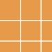
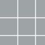

Плитка и керамогранит Kerama Marazzi в наличии в СПб
В каталоге — 4 позиций керамической плитки, 38 позиций керамогранита Kerama Marazzi с указанными размерами, сортами и артикулами. Можно проверить остаток по конкретной позиции, запросить цену и подготовить расчёт для объекта.
42 позиций в каталогеСуммарный остаток: 28 177 м²Самовывоз из Войскорово
Остатки указаны по складскому каталогу на 1 октября 2026 года и требуют подтверждения перед заказом. Доставка согласуется по адресу объекта.
Позиции Kerama Marazzi в наличии
 Мирабо Серый Обрезной600 × 600 × 9 мм, Kerama Marazzi, 1 сортВ наличии 7 848 м²Артикул: DD638520RУзнать цену
Мирабо Серый Обрезной600 × 600 × 9 мм, Kerama Marazzi, 1 сортВ наличии 7 848 м²Артикул: DD638520RУзнать цену Мирабо Серый Тёмный Матовый Обрезной600 × 1200 × 9 мм, Kerama Marazzi, 1 сортВ наличии 3 342 м²Узнать цену
Мирабо Серый Тёмный Матовый Обрезной600 × 1200 × 9 мм, Kerama Marazzi, 1 сортВ наличии 3 342 м²Узнать цену Мирабо Бежевый Обрезной600 × 600 × 9 мм, Kerama Marazzi, 1 сортВ наличии 2 675 м²Артикул: DD638420RУзнать цену
Мирабо Бежевый Обрезной600 × 600 × 9 мм, Kerama Marazzi, 1 сортВ наличии 2 675 м²Артикул: DD638420RУзнать цену Коллиано Бежевый Светлый300 × 300 × 8 мм, Kerama Marazzi, 1 сортВ наличии 2 073 м²Узнать цену
Коллиано Бежевый Светлый300 × 300 × 8 мм, Kerama Marazzi, 1 сортВ наличии 2 073 м²Узнать цену Мирабо Серый Тёмный Обрезной600 × 600 × 9 мм, Kerama Marazzi, 1 сортВ наличии 1 421 м²Артикул: DD638620RУзнать цену
Мирабо Серый Тёмный Обрезной600 × 600 × 9 мм, Kerama Marazzi, 1 сортВ наличии 1 421 м²Артикул: DD638620RУзнать цену Радуга Белый Обрезной600 × 600 × 9 мм, Kerama Marazzi, 1 сортВ наличии 1 085 м²Артикул: SG606220RУзнать цену
Радуга Белый Обрезной600 × 600 × 9 мм, Kerama Marazzi, 1 сортВ наличии 1 085 м²Артикул: SG606220RУзнать цену Королевская Дорога Черный Обрезной600 × 1200 × 9 мм, Kerama Marazzi, 2 сортВ наличии 763 м²Узнать цену
Королевская Дорога Черный Обрезной600 × 1200 × 9 мм, Kerama Marazzi, 2 сортВ наличии 763 м²Узнать цену Монте Тиберио Серый Светлый Обрезной600 × 1200 × 9 мм, Kerama Marazzi, 2 сортВ наличии 762 м²1 250 ₽/м²
Монте Тиберио Серый Светлый Обрезной600 × 1200 × 9 мм, Kerama Marazzi, 2 сортВ наличии 762 м²1 250 ₽/м² Калейдоскоп Белый200 × 200 мм, Kerama Marazzi, 1 сортВ наличии 742 м²Узнать цену
Калейдоскоп Белый200 × 200 мм, Kerama Marazzi, 1 сортВ наличии 742 м²Узнать цену Королевская Дорога Серый Светлый600 × 600 × 9 мм, Kerama Marazzi, 1 сортВ наличии 732 м²Узнать цену
Королевская Дорога Серый Светлый600 × 600 × 9 мм, Kerama Marazzi, 1 сортВ наличии 732 м²Узнать цену Королевская Дорога Серый Светлый Обрезной600 × 1200 × 9 мм, Kerama Marazzi, 1 сортВ наличии 567 м²Узнать цену
Королевская Дорога Серый Светлый Обрезной600 × 1200 × 9 мм, Kerama Marazzi, 1 сортВ наличии 567 м²Узнать цену Королевская Дорога Коричневый Светлый Обрезной600 × 600 × 9 мм, Kerama Marazzi, 1 сортВ наличии 521 м²Артикул: SG614420RУзнать цену
Королевская Дорога Коричневый Светлый Обрезной600 × 600 × 9 мм, Kerama Marazzi, 1 сортВ наличии 521 м²Артикул: SG614420RУзнать цену
Радуга Оранжевый Обрезной600 × 600 × 9 мм, Kerama Marazzi, 1 сортВ наличии 442 м²Артикул: SG610120RУзнать цену Радуга Фиолетовый Обрезной600 × 600 × 11 мм, Kerama Marazzi, 2 сортВ наличии 403 м²Артикул: SG636200RУзнать цену
Радуга Фиолетовый Обрезной600 × 600 × 11 мм, Kerama Marazzi, 2 сортВ наличии 403 м²Артикул: SG636200RУзнать цену Фрегат Бежевый Обрезной200 × 800 × 9 мм, Kerama Marazzi, 1 сортВ наличии 359 м²Артикул: SG701390RУзнать цену
Фрегат Бежевый Обрезной200 × 800 × 9 мм, Kerama Marazzi, 1 сортВ наличии 359 м²Артикул: SG701390RУзнать цену
Терраццо Серый600 × 600 × 9 мм, Kerama Marazzi, 1 сортВ наличии 353 м²Артикул: SG632620R960 ₽/м² Калейдоскоп Бежевый200 × 200 мм, Kerama Marazzi, 1 сортВ наличии 339 м²Узнать цену
Калейдоскоп Бежевый200 × 200 мм, Kerama Marazzi, 1 сортВ наличии 339 м²Узнать цену Сенат Бежевый Обрезной400 × 400 × 8 мм, Kerama Marazzi, 1 сортВ наличии 325 м²Узнать цену
Сенат Бежевый Обрезной400 × 400 × 8 мм, Kerama Marazzi, 1 сортВ наличии 325 м²Узнать цену Мотиво Серый Светлый400 × 400 × 8 мм, Kerama Marazzi, 1 сортВ наличии 309 м²Узнать ценуКоролевская Дорога Серый Светлый Обрезной600 × 1200 × 9 мм, Kerama Marazzi, 2 сортВ наличии 283 м²Узнать цену
Мотиво Серый Светлый400 × 400 × 8 мм, Kerama Marazzi, 1 сортВ наличии 309 м²Узнать ценуКоролевская Дорога Серый Светлый Обрезной600 × 1200 × 9 мм, Kerama Marazzi, 2 сортВ наличии 283 м²Узнать цену Гармония Белый300 × 300 × 8 мм, Kerama Marazzi, 2 сортВ наличии 272 м²Артикул: SG917400NУзнать цену
Гармония Белый300 × 300 × 8 мм, Kerama Marazzi, 2 сортВ наличии 272 м²Артикул: SG917400NУзнать цену Сенат Серый Светлый Обрезной400 × 400 × 8 мм, Kerama Marazzi, 1 сортВ наличии 239 м²Узнать цену
Сенат Серый Светлый Обрезной400 × 400 × 8 мм, Kerama Marazzi, 1 сортВ наличии 239 м²Узнать цену Терраццо Серый600 × 600 × 9 мм, Kerama Marazzi, 2 сортВ наличии 237 м²960 ₽/м²
Терраццо Серый600 × 600 × 9 мм, Kerama Marazzi, 2 сортВ наличии 237 м²960 ₽/м² Радуга Красный Обрезной600 × 600 × 11 мм, Kerama Marazzi, 1 сортВ наличии 226 м²Артикул: SG623000RУзнать цену
Радуга Красный Обрезной600 × 600 × 11 мм, Kerama Marazzi, 1 сортВ наличии 226 м²Артикул: SG623000RУзнать цену Терраццо Серый Светлый600 × 600 × 9 мм, Kerama Marazzi, 2 сортВ наличии 210 м²Артикул: SG632420RУзнать цену
Терраццо Серый Светлый600 × 600 × 9 мм, Kerama Marazzi, 2 сортВ наличии 210 м²Артикул: SG632420RУзнать цену Радуга Белый Обрезной600 × 1200 × 11 мм, Kerama Marazzi, 3 сортВ наличии 197 м²Узнать ценуРадуга Белый Обрезной600 × 600 × 9 мм, Kerama Marazzi, 2 сортВ наличии 190 м²Артикул: SG606220RУзнать цену
Радуга Белый Обрезной600 × 1200 × 11 мм, Kerama Marazzi, 3 сортВ наличии 197 м²Узнать ценуРадуга Белый Обрезной600 × 600 × 9 мм, Kerama Marazzi, 2 сортВ наличии 190 м²Артикул: SG606220RУзнать цену Монте Тиберио Обрезной600 × 600 × 9 мм, Kerama Marazzi, 1 сортВ наличии 158 м²Артикул: SG622620RУзнать цену
Монте Тиберио Обрезной600 × 600 × 9 мм, Kerama Marazzi, 1 сортВ наличии 158 м²Артикул: SG622620RУзнать цену Норд Белый400 × 400 × 8 мм, Kerama Marazzi, 3 сортВ наличии 144 м²Узнать цену
Норд Белый400 × 400 × 8 мм, Kerama Marazzi, 3 сортВ наличии 144 м²Узнать цену Про Матрикс Серый Светлый Матовый обрезной300 × 600 × 9 мм, Kerama MarazziВ наличии 126 м²Артикул: 11259RУзнать цену
Про Матрикс Серый Светлый Матовый обрезной300 × 600 × 9 мм, Kerama MarazziВ наличии 126 м²Артикул: 11259RУзнать цену Радуга Желтый Обрезной600 × 600 × 9 мм, Kerama Marazzi, 1 сортВ наличии 106 м²Артикул: SG618620RУзнать цену
Радуга Желтый Обрезной600 × 600 × 9 мм, Kerama Marazzi, 1 сортВ наличии 106 м²Артикул: SG618620RУзнать цену Радуга Бежевый Обрезной600 × 600 × 9 мм, Kerama Marazzi, 1 сортВ наличии 101 м²Узнать цену
Радуга Бежевый Обрезной600 × 600 × 9 мм, Kerama Marazzi, 1 сортВ наличии 101 м²Узнать цену Калейдоскоп Персиковый200 × 200 мм, Kerama Marazzi, 1 сортВ наличии 99 м²Узнать цену
Калейдоскоп Персиковый200 × 200 мм, Kerama Marazzi, 1 сортВ наличии 99 м²Узнать цену Про Матрикс Бежевый обрезной600 × 150 × 11 мм, Kerama Marazzi, 1 сортВ наличии 93 м²Артикул: DD317900RУзнать цену
Про Матрикс Бежевый обрезной600 × 150 × 11 мм, Kerama Marazzi, 1 сортВ наличии 93 м²Артикул: DD317900RУзнать цену Радуга Пурпурно-Красный Обрезной600 × 600 × 11 мм, Kerama Marazzi, 1 сортВ наличии 74 м²Артикул: SG641300RУзнать цену
Радуга Пурпурно-Красный Обрезной600 × 600 × 11 мм, Kerama Marazzi, 1 сортВ наличии 74 м²Артикул: SG641300RУзнать цену Радуга Зеленый Обрезной600 × 600 × 9 мм, Kerama Marazzi, 1 сортВ наличии 72 м²Артикул: SG618520RУзнать цену
Радуга Зеленый Обрезной600 × 600 × 9 мм, Kerama Marazzi, 1 сортВ наличии 72 м²Артикул: SG618520RУзнать цену Урбан Серый Светлый300 × 300 × 8 мм, Kerama Marazzi, 1 сортВ наличии 66 м²Артикул: SG927900NУзнать цену
Урбан Серый Светлый300 × 300 × 8 мм, Kerama Marazzi, 1 сортВ наличии 66 м²Артикул: SG927900NУзнать цену Радуга Синий Обрезной600 × 600 × 9 мм, Kerama Marazzi, 1 сортВ наличии 50 м²Артикул: SG611920RУзнать цену
Радуга Синий Обрезной600 × 600 × 9 мм, Kerama Marazzi, 1 сортВ наличии 50 м²Артикул: SG611920RУзнать цену Радуга Бежевый Обрезной600 × 600 × 11 мм, Kerama Marazzi, 1 сортВ наличии 48 м²Узнать цену
Радуга Бежевый Обрезной600 × 600 × 11 мм, Kerama Marazzi, 1 сортВ наличии 48 м²Узнать цену Коллиано Серый300 × 300 × 8 мм, Kerama Marazzi, 1 сортВ наличии 47 м²Узнать цену
Коллиано Серый300 × 300 × 8 мм, Kerama Marazzi, 1 сортВ наличии 47 м²Узнать цену Фондамента Серый Темный600 × 600 × 11 мм, Kerama Marazzi, 1 сортВ наличии 44 м²Артикул: DL601300RУзнать ценуКоролевская Дорога Коричневый Светлый Обрезной600 × 600 × 9 мм, Kerama Marazzi, 2 сортВ наличии 34 м²Артикул: SG614420RУзнать цену
Фондамента Серый Темный600 × 600 × 11 мм, Kerama Marazzi, 1 сортВ наличии 44 м²Артикул: DL601300RУзнать ценуКоролевская Дорога Коричневый Светлый Обрезной600 × 600 × 9 мм, Kerama Marazzi, 2 сортВ наличии 34 м²Артикул: SG614420RУзнать ценуНужен расчёт для объекта?
Отправьте артикулы или названия и необходимое количество. Уточним актуальный остаток и цену, подготовим счёт и согласуем самовывоз или доставку.
Написать на электронную почту